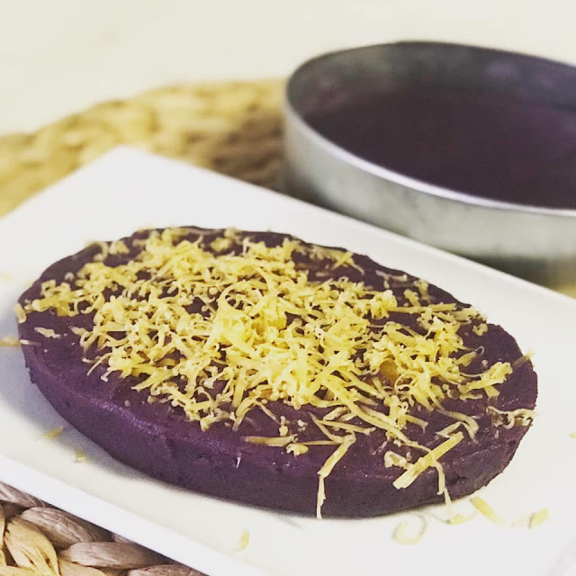

Ube Halaya

Halayang Ube (Ube Halaya) is a classic Filipino delicacy made of purple yam, coconut milk, and butter. Creamy, cheesy, and topped with golden latik, it's delicious as a snack or dessert.
Ingredients
- 1 package (16 ounces) frozen grated ube, thawed
- 1 can (13.5 ounces) coconut milk
- 1 can (14 ounces) sweetened condensed milk
- 1 can (12 ounces) evaporated milk
- ½ cup butter
- 1 cup sugar
- 2 to 3 drops ube extract (optional)
- 1 cup American processed cheese (Eden brand), shredded
Steps
- In a wide, heavy-bottomed pan over medium heat, combine grated ube, coconut milk, condensed milk, evaporated milk, butter, and sugar.
- Bring to a boil, stirring occasionally until sugar is dissolved, butter is melted, and ube is dispersed
- Add ube extract, if using, and stir until mixture is evenly colored.
- Lower heat and continue to cook, stirring regularly, for about 30 to 40 minutes or until a soft, sticky dough forms.
- Add cheese and stir until melted. Continue to cook for another 10 to 15 minutes or until mixture is thick enough to cling to the back of the spoon and pulls slightly from the side of the pan.
- Lightly grease sides of a baking dish or llanera mold with coconut oil or melted butter.
- Spoon ube halaya into the prepared dish or mold and using a buttered spatula, spread and flatten evenly. Allow to cool.
- To serve, invert halaya onto a serving plate. Lightly brush the top with coconut oil and garnish with latik, shredded cheese, toasted coconut flakes or sweetened macapuno.
Back to main page